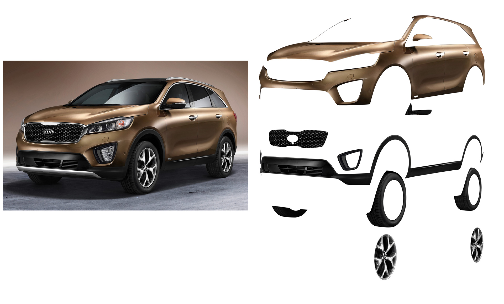
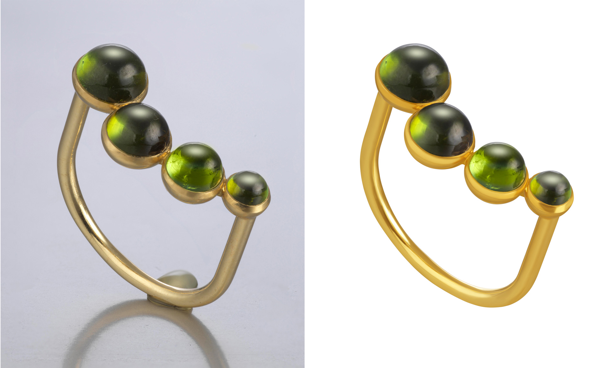
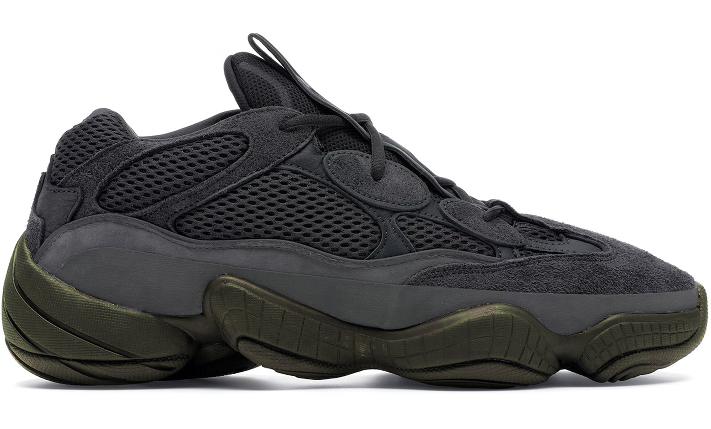

Clipping Path Service

Clipping path is used to remove the existing background or which
means is utilized for extricating objects. Then again individuals
from still deep etching symbolism and furthermore incorporates other
photograph altering and control services. It is a method of
eliminating a specific shape from a photograph to give it a superior
look.
We do always hand-drawn clipping paths with photoshop pen tool and
always do 300 % hand-drawn clipping paths for perfect detail. Every
clipped image quality will be checked by our QC team which ensure
100% quality work to satisfy our clints.
Multi Path service

There is a lot we can do with Multi Path services. For one thing,
we can isolate each object or colors in a photo. We can also do
background removal, photo color corrections, etc. Our Clipping path
service:
✔ Basic Clipping Path
✔ Simple Clipping Path
✔ Medium Clipping Path
✔ Complex
Clipping Path
✔ Super Complex Clipping Path
Photo Retouching Service

An image retouching can be minor touch up or a heavy edit. This
retouching makes all photos look gorgeous and breathtaking. We use
photoshop to clean up unnecessary spot, sketch, defects, fault,
stain etc from the model or any type of product images. We provide
you the best photo retouching service as much we can. Photo Retouch
includes:
✔ Product retouching
✔ Model retouching
✔ Jewelry retouching
Ghost Mannequin Service

Ghost Mannequin Removal Service is one sort of Photoshop service. The mannequin is removed from the cloth and the back of the cloth is joined to the front in ghost mannequin or neck joint editing. It is additionally realized Neck joint Service or Ghost Mannequin Service or picture back part joint service. Mannequin is being utilized rather than modeled to make 2D, the 3D impact of different apparel item things for online purposes. This service is mostly used for doll with dress, clothing items of pieces, for example, T-shirts, shirts, pants, tops, coats, coats, pants, sweatshirts, swimming coats other pieces of clothing things. It is very important for any e-commerce service, Photographer & web stores to have Ghost Mannequin Services
Shadow Creation Service

Drop shadow can improve the attraction and much more realistic of
an image. It helps image to comparing between the background and the
image color. Our expert team can create natural drop shadows which
makes the image feel like live on a pure white background. Our
Shadow Creation Services are:
✔ Natural shadow
✔ Reflect shadow
✔ Drop shadow
Color Correction Service

Photo Color Correction Service is a photo editing process of enhancing the color and tone of a photograph. In addition, the editing is done to ensure that images have the most realistic color. To interpret things properly, color is the most crucial component of photography. Beginning with the field or section of usage, color adjustment is required. Marketing is now the most popular industry in which effective color presentation is unparalleled.